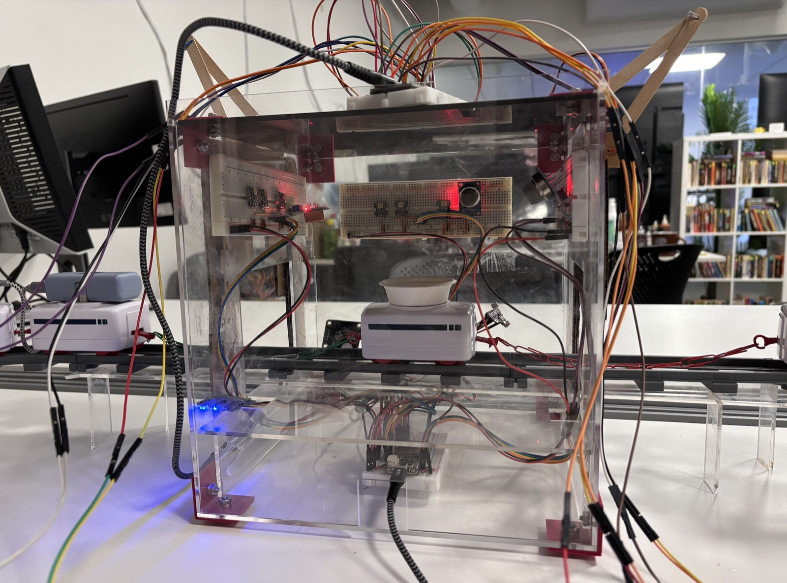
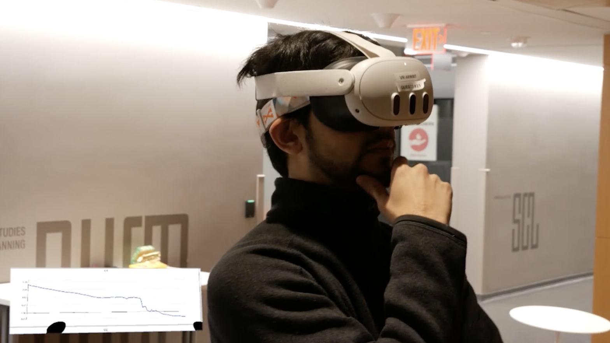
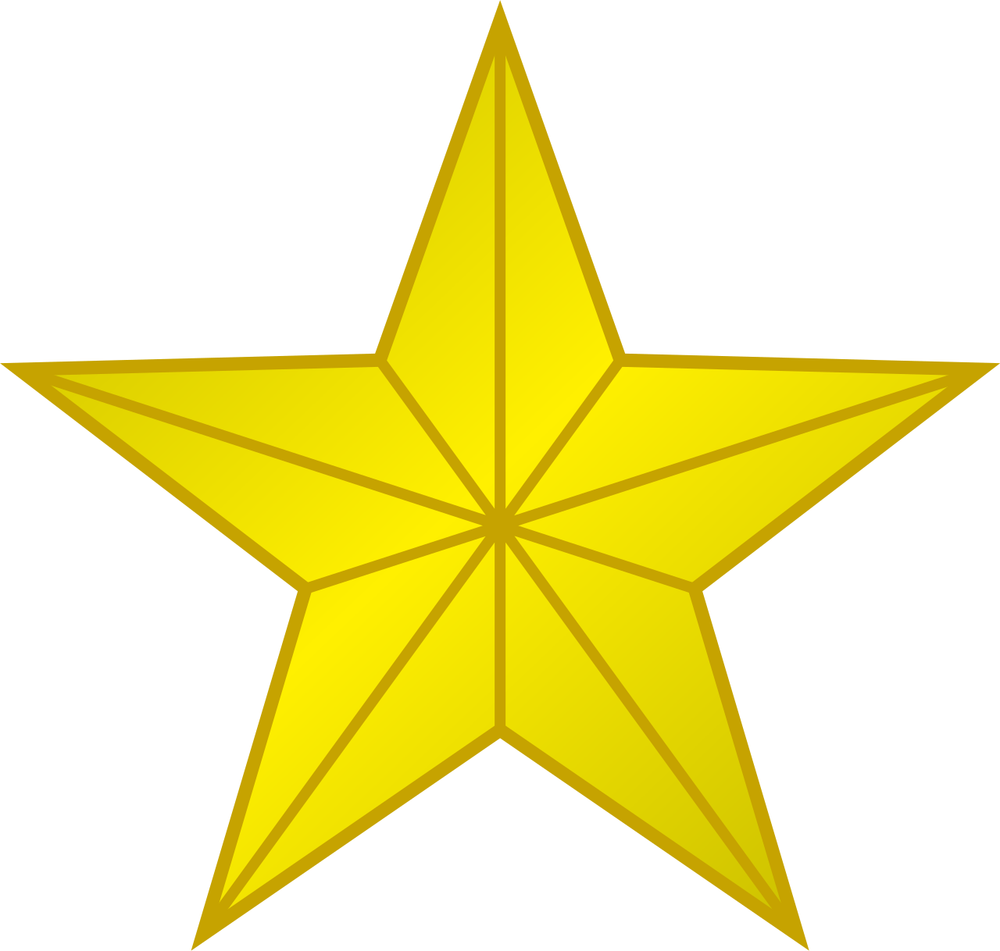
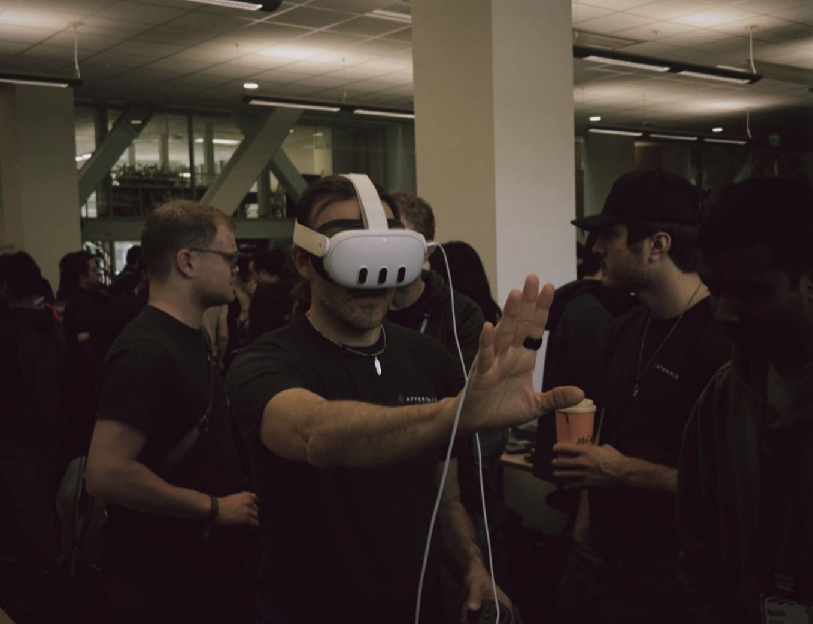
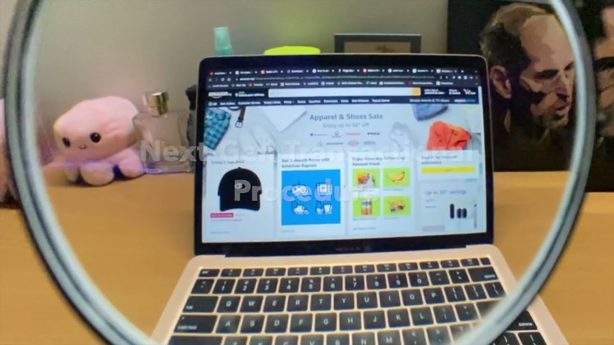

Projects

SmellBox
Custom-built box with an array of metal oxide sensors and Arduino for automated, large-scale olfactory data collection.
Work in progress

Dreamee
AI, VR and EEG-BCI powered wearable, neurofeedback dream machine for people to speak out their aspirations and experience it immersively.
Read more

ARTag
AI-powered wearable AR laser tag system, with integrated motion-detecting hardware and real-time action classification, supporting multiplayer experience.
Read more
Augmented Rosyth
Architectural design portfolio for a speculative, hybrid, XR and AI-enabled community-farm learning complex.
Read more
Anu
AI, VR and haptic powered speculative digital legacy platform for digital natives to physically and conversationally interact with their deceased loved ones.
Read more

TIMI
Interaction design portfolio for a multimodal, wearable, context-aware AR travel companion.
Read more
EyePay
AR glasses prototype that combines eye gaze and head gestures for hands-free mobile payment in physical and online shopping.
Read more